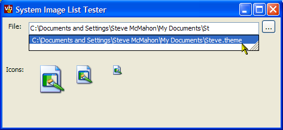

SysImageList Code (48K)
SysImageList Code (48K)
 Using SysImageList Code (25K)
Using SysImageList Code (25K)
 4 Mar 2003
4 Mar 2003
First Posted
 Getting File Icons Using The Shell
Getting File Icons Using The Shell

System Image List
Get unlimited icons for files without bringing your application to its knees (if it has knees).
Although you can easily extract copies of icons for any file from the Shell using the SHGetFileInfo call, if you need to be able to display the icon for a large number of files you can end up with too many icons and run out of resources. The System Image List uses an intelligent caching technique to provide icons without this overhead.
Dr. Jeckyll and Dr. Jeckyll
The SystemImageList class provided with the download has two distinct personalities depending on which OS you're running on.
Under Windows XP, the Shell gains a new function for obtaining the System Image List, SHGetImageList. Well, it would if someone had built the DLL properly - for some reason they forgot to export this function by name, and therefore it is only available by the mysterious ordinal #727 (see KB article Q316931 for more details). In any case this function returns a COM IImageList interface to the ImageList. Under previous versions, the System Image List is obtained by a call to SHGetFileInfo which returns a handle to a ComCtl32.DLL ImageList which can be used with the standard exported ImageList_ API calls.
The advantage of the new XP function is that it provides access to the Extra Large Image List used for in the Tile and Thumbnail views of the Shell. So the code decides based on the System.Environment.OSVersion.Version which way to get at the ImageList. Once that's decided the only real difference between the COM ImageList interface and the standard DLL call version is that with the COM versions calls do not need you to tell it which ImageList handle you're working on, as the handle is the IUnknown pointer to the object.
Curses
It would be nice if you could use the System Image List directly with a ListView or similar control, but unfortunately the System.Windows.Forms.ImageList class is Sealed. There's probably a good reason for this, but it doesn't seem to be the best design decision in the Framework. This means that if you do want to use this class with a control that supports a System.Windows.Forms ImageList then you need to find another way to associated the ImageList.
For controls like the ListView and TreeView, this is just a matter of using the API to set the ImageLists. The code provided comes with a class, SysImageListHelper which provides two static methods allowing you to associate a SystemImageList rather than a standard ImageList to these controls.
For other controls, you can use the SystemImageList's drawing methods to draw onto the control itself. The UsingSysImageList download demonstrates some very basic code for attaching the System Image List to a ListBox and ComboBox.
Implementing the SystemImageList Class
The first point in implementing the class is to get a handle to the System Image List. As noted before there are two distinct interfaces to I'll cover these in turn.
Getting the System Image List Handle using SHGetFileInfo
The first step to doing this is to declare the SHGetFileInfo DLL call and the flags you need to use it:
using System.Runtime.InteropServices;
[Flags]
private enum SHGetFileInfoConstants : int
{
SHGFI_ICON = 0x100, // get icon
SHGFI_DISPLAYNAME = 0x200, // get display name
SHGFI_TYPENAME = 0x400, // get type name
SHGFI_ATTRIBUTES = 0x800, // get attributes
SHGFI_ICONLOCATION = 0x1000, // get icon location
SHGFI_EXETYPE = 0x2000, // return exe type
SHGFI_SYSICONINDEX = 0x4000, // get system icon index
SHGFI_LINKOVERLAY = 0x8000, // put a link overlay on icon
SHGFI_SELECTED = 0x10000, // show icon in selected state
SHGFI_ATTR_SPECIFIED = 0x20000, // get only specified attributes
SHGFI_LARGEICON = 0x0, // get large icon
SHGFI_SMALLICON = 0x1, // get small icon
SHGFI_OPENICON = 0x2, // get open icon
SHGFI_SHELLICONSIZE = 0x4, // get shell size icon
SHGFI_PIDL = 0x8, // pszPath is a pidl
SHGFI_USEFILEATTRIBUTES = 0x10, // use passed dwFileAttribute
SHGFI_ADDOVERLAYS = 0x000000020, // apply the appropriate overlays
SHGFI_OVERLAYINDEX = 0x000000040 // Get the index of the overlay
}
[StructLayout(LayoutKind.Sequential)]
private struct SHFILEINFO
{
public IntPtr hIcon;
public int iIcon;
public int dwAttributes;
[MarshalAs(UnmanagedType.ByValTStr, SizeConst=MAX_PATH)]
public string szDisplayName;
[MarshalAs(UnmanagedType.ByValTStr, SizeConst=80)]
public string szTypeName;
}
[DllImport("shell32")]
private static extern IntPtr SHGetFileInfo (
string pszPath,
int dwFileAttributes,
ref SHFILEINFO psfi,
uint cbFileInfo,
uint uFlags);
With this in place then the ImageList handle is the return value of SHGetFileInfo for any file when the SHGFI_SYSICONINDEX flag is specifed:
SHGetFileInfoConstants dwFlags =
SHGetFileInfoConstants.SHGFI_USEFILEATTRIBUTES |
SHGetFileInfoConstants.SHGFI_SYSICONINDEX ;
if (size == SysImageListSize.smallIcons)
{
dwFlags |= SHGetFileInfoConstants.SHGFI_SMALLICON;
}
// Get image list
SHFILEINFO shfi = new SHFILEINFO();
uint shfiSize = (uint)Marshal.SizeOf(shfi.GetType());
// Call SHGetFileInfo to get the image list handle
// using an arbitrary file:
hIml = SHGetFileInfo(
".txt",
FILE_ATTRIBUTE_NORMAL,
ref shfi,
shfiSize,
(uint)dwFlags);
Getting the System Image List using SHGetImageList
To get the System Image List with this function you need both to create a COM IImageList Interface to work with and to declare the SHGetImageList function. In order to get the handle correctly, the same function is declared twice; once to return the COM object and once to get the handle as an IntPtr - although in theory you can retrieve the handle from the IUnknown interface of IImageList directly, I found that the returned value was off by 4 bytes.
/// <summary>
/// SHGetImageList is not exported correctly in XP. See KB316931
/// http://support.microsoft.com/default.aspx?scid=kb;EN-US;Q316931
/// Apparently (and hopefully) ordinal 727 isn't going to change.
/// </summary>
[DllImport("shell32.dll", EntryPoint = "#727")]
private extern static int SHGetImageList(
int iImageList,
ref Guid riid,
ref IImageList ppv
);
[DllImport("shell32.dll", EntryPoint = "#727")]
private extern static int SHGetImageListHandle(
int iImageList,
ref Guid riid,
ref IntPtr handle
);
#region Structures
[StructLayout(LayoutKind.Sequential)]
private struct POINT
{
int x;
int y;
}
[StructLayout(LayoutKind.Sequential)]
private struct IMAGELISTDRAWPARAMS
{
public int cbSize;
public IntPtr himl;
public int i;
public IntPtr hdcDst;
public int x;
public int y;
public int cx;
public int cy;
public int xBitmap; // x offest from the upperleft of bitmap
public int yBitmap; // y offset from the upperleft of bitmap
public int rgbBk;
public int rgbFg;
public int fStyle;
public int dwRop;
public int fState;
public int Frame;
public int crEffect;
}
[StructLayout(LayoutKind.Sequential)]
private struct IMAGEINFO
{
public IntPtr hbmImage;
public IntPtr hbmMask;
public int Unused1;
public int Unused2;
public RECT rcImage;
}
#endregion
#region Private ImageList COM Interop (XP)
[ComImportAttribute()]
[GuidAttribute("46EB5926-582E-4017-9FDF-E8998DAA0950")]
[InterfaceTypeAttribute(ComInterfaceType.InterfaceIsIUnknown)]
//helpstring("Image List"),
interface IImageList
{
[PreserveSig]
int Add(
IntPtr hbmImage,
IntPtr hbmMask,
ref int pi);
[PreserveSig]
int ReplaceIcon(
int i,
IntPtr hicon,
ref int pi);
[PreserveSig]
int SetOverlayImage(
int iImage,
int iOverlay);
[PreserveSig]
int Replace(
int i,
IntPtr hbmImage,
IntPtr hbmMask);
[PreserveSig]
int AddMasked(
IntPtr hbmImage,
int crMask,
ref int pi);
[PreserveSig]
int Draw(
ref IMAGELISTDRAWPARAMS pimldp);
[PreserveSig]
int Remove(
int i);
[PreserveSig]
int GetIcon(
int i,
int flags,
ref IntPtr picon);
[PreserveSig]
int GetImageInfo(
int i,
ref IMAGEINFO pImageInfo);
[PreserveSig]
int Copy(
int iDst,
IImageList punkSrc,
int iSrc,
int uFlags);
[PreserveSig]
int Merge(
int i1,
IImageList punk2,
int i2,
int dx,
int dy,
ref Guid riid,
ref IntPtr ppv);
[PreserveSig]
int Clone(
ref Guid riid,
ref IntPtr ppv);
[PreserveSig]
int GetImageRect(
int i,
ref RECT prc);
[PreserveSig]
int GetIconSize(
ref int cx,
ref int cy);
[PreserveSig]
int SetIconSize(
int cx,
int cy);
[PreserveSig]
int GetImageCount(
ref int pi);
[PreserveSig]
int SetImageCount(
int uNewCount);
[PreserveSig]
int SetBkColor(
int clrBk,
ref int pclr);
[PreserveSig]
int GetBkColor(
ref int pclr);
[PreserveSig]
int BeginDrag(
int iTrack,
int dxHotspot,
int dyHotspot);
[PreserveSig]
int EndDrag();
[PreserveSig]
int DragEnter(
IntPtr hwndLock,
int x,
int y);
[PreserveSig]
int DragLeave(
IntPtr hwndLock);
[PreserveSig]
int DragMove(
int x,
int y);
[PreserveSig]
int SetDragCursorImage(
ref IImageList punk,
int iDrag,
int dxHotspot,
int dyHotspot);
[PreserveSig]
int DragShowNolock(
int fShow);
[PreserveSig]
int GetDragImage(
ref POINT ppt,
ref POINT pptHotspot,
ref Guid riid,
ref IntPtr ppv);
[PreserveSig]
int GetItemFlags(
int i,
ref int dwFlags);
[PreserveSig]
int GetOverlayImage(
int iOverlay,
ref int piIndex);
};
#endregion
Once this is done you get the handle like this (the isXpOrAbove function just uses System.Enivronent.OSVersion.Version to check whether you're running on XP or not:
if (isXpOrAbove())
{
// Get the System IImageList object from the Shell:
Guid iidImageList = new Guid("46EB5926-582E-4017-9FDF-E8998DAA0950");
int ret = SHGetImageList(
(int)size,
ref iidImageList,
ref iImageList
);
// the image list handle is the IUnknown pointer, but
// using Marshal.GetIUnknownForObject doesn't return
// the right value. It really doesn't hurt to make
// a second call to get the handle:
SHGetImageListHandle((int)size, ref iidImageList, ref hIml);
}
Now You Have The Handle
That's most of the hard work pretty much done. Once you've got the handle, useful functions you can perform with the ImageList are:
- Finding the index of the icon for the specified file
- Drawing an icon
- Extracting a copy of an icon
If you're using the IImageList interface, you have all of the ImageList declares you need; otherwise a few additional declares are needed:
[DllImport("comctl32")]
private extern static int ImageList_DrawIndirect(
ref IMAGELISTDRAWPARAMS pimldp);
[DllImport("comctl32")]
private extern static int ImageList_GetIconSize(
IntPtr himl,
ref int cx,
ref int cy);
[DllImport("comctl32")]
private extern static IntPtr ImageList_GetIcon(
IntPtr himl,
int i,
int flags);
To find the index of an icon in the System Image List, use the SHGetFileInfo call with the SHGFI_SYSICONINDEX flag:
public int IconIndex(
string fileName,
bool forceLoadFromDisk,
ShellIconStateConstants iconState
)
{
SHGetFileInfoConstants dwFlags =
SHGetFileInfoConstants.SHGFI_SYSICONINDEX;
int dwAttr = 0;
if (size == SysImageListSize.smallIcons)
{
dwFlags |= SHGetFileInfoConstants.SHGFI_SMALLICON;
}
// We can choose whether to access the disk or not. If you don't
// hit the disk, you may get the wrong icon if the icon is
// not cached. Also only works for files.
if (!forceLoadFromDisk)
{
dwFlags |= SHGetFileInfoConstants.SHGFI_USEFILEATTRIBUTES;
dwAttr = FILE_ATTRIBUTE_NORMAL;
}
else
{
dwAttr = 0;
}
// sFileSpec can be any file. You can specify a
// file that does not exist and still get the
// icon, for example sFileSpec = "C:\PANTS.DOC"
SHFILEINFO shfi = new SHFILEINFO();
uint shfiSize = (uint)Marshal.SizeOf(shfi.GetType());
IntPtr retVal = SHGetFileInfo(
fileName, dwAttr, ref shfi, shfiSize,
((uint)(dwFlags) | (uint)iconState));
if (retVal.Equals(IntPtr.Zero))
{
System.Diagnostics.Debug.Assert(
(!retVal.Equals(IntPtr.Zero)),
"Failed to get icon index");
return 0;
}
else
{
return shfi.iIcon;
}
}
Once you have the index, you can draw or extract the image:
- Extracting an Icon
public Icon Icon(int index) { Icon icon = null; IntPtr hIcon = IntPtr.Zero; if (iImageList == null) { hIcon = ImageList_GetIcon( hIml, index, (int)ImageListDrawItemConstants.ILD_TRANSPARENT); } else { iImageList.GetIcon( index, (int)ImageListDrawItemConstants.ILD_TRANSPARENT, ref hIcon); } if (hIcon != IntPtr.Zero) { icon = System.Drawing.Icon.FromHandle(hIcon); } return icon; } - Drawing an Icon
public void DrawImage( IntPtr hdc, int index, int x, int y, ImageListDrawItemConstants flags ) { IMAGELISTDRAWPARAMS pimldp = new IMAGELISTDRAWPARAMS(); pimldp.hdcDst = hdc; pimldp.cbSize = Marshal.SizeOf(pimldp.GetType()); pimldp.i = index; pimldp.x = x; pimldp.y = y; pimldp.rgbFg = -1; pimldp.fStyle = (int)flags; if (iImageList == null) { // Using DLL Calls: pimldp.hIml = this.hIml; int ret = ImageList_DrawEx( ref pimldp); } else { // Using IImageList interface: this.iImageList.Draw(ref pimldp); } }To get a device context to draw on, use the Graphics GetHdc and ReleaseHdc methods like this:
// assuming gfx is a Graphics object: IntPtr hDc = gfx.GetHdc(); // .. do drawing here gfx.ReleaseHdc(hDc);
When drawing there are a number of other parameters you can set to modify the alpha, saturation and colours used to render the image. Refer to the code for more details on using these.